The Surprise Thread
5pm, two hours before a surprise 30th: the group chat is on fire, the decor and the cake are still in the bag, and the friend who promised to do both just walked in from work running on empty. Her reply to the thread is Red Bull Sugarfree.
It looks like the feed itself, so it gets read instead of skipped (text-message formats are reported at 2 to 3x the CTR of polished creative). Reading is active attention: the viewer pulls the story in at their own speed, and a group chat is a social proof machine with no testimonial claims needed. It sells when every bubble is short, the stakes are visible within two bubbles, and the product is the reply that changes the thread.
Contact sheet
One keyframe per shot, with the caption as it will appear.
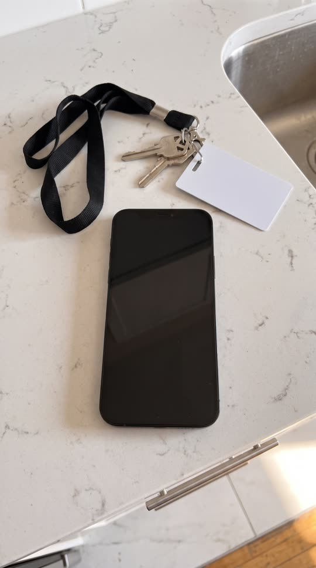
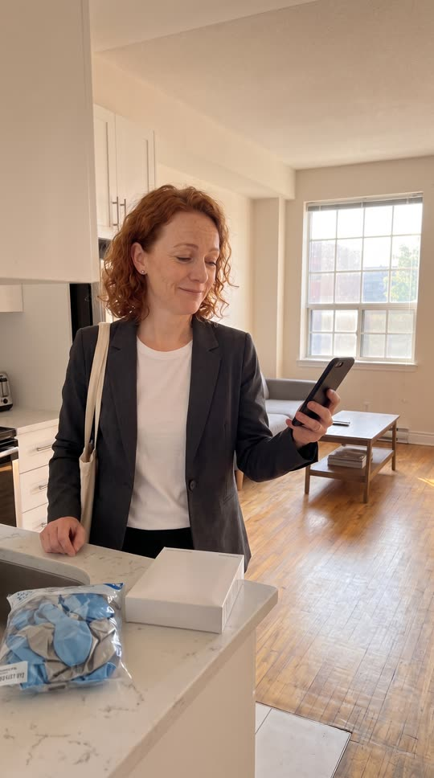

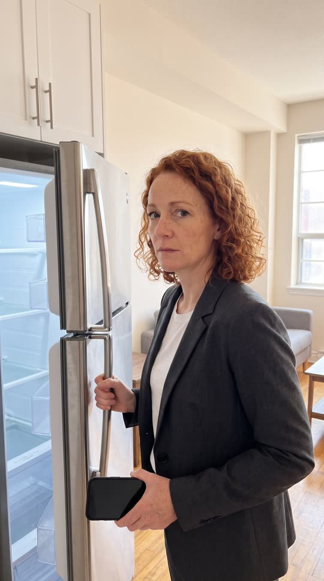
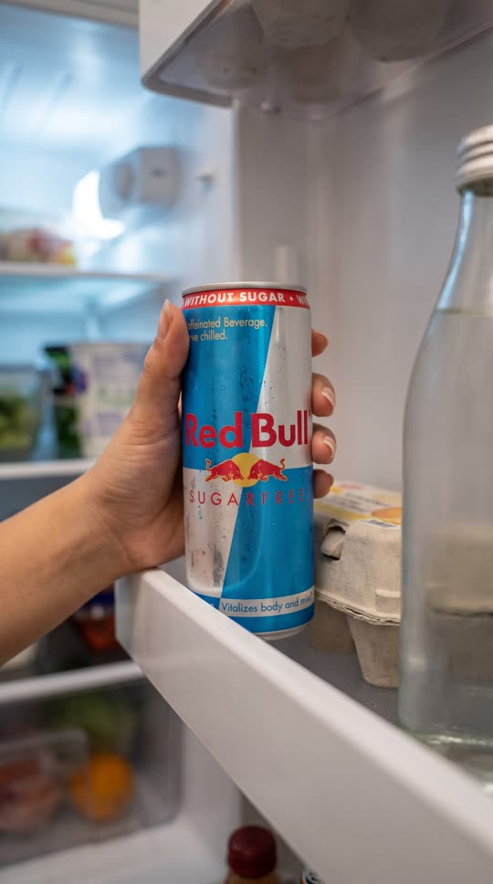
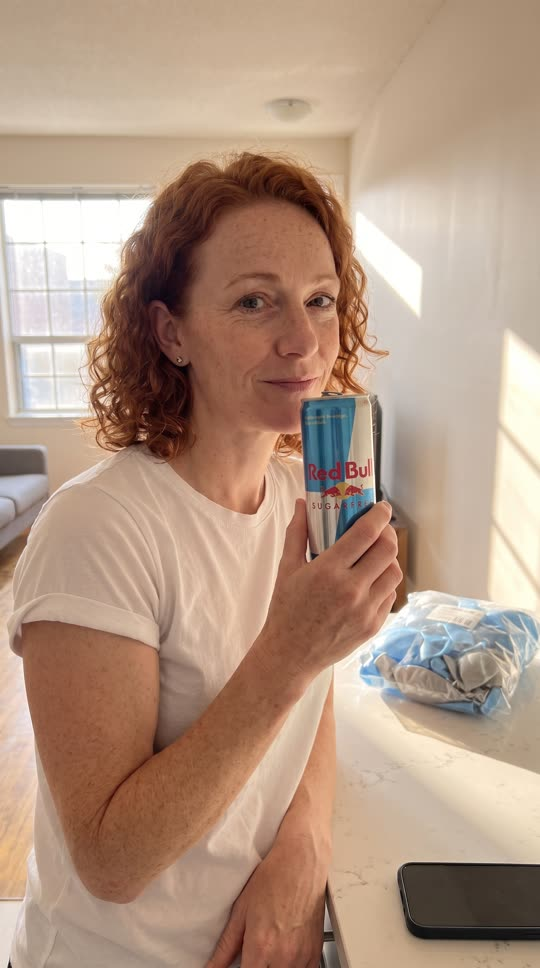

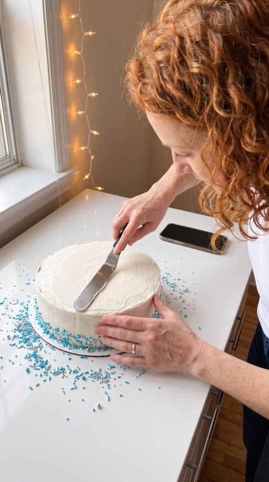
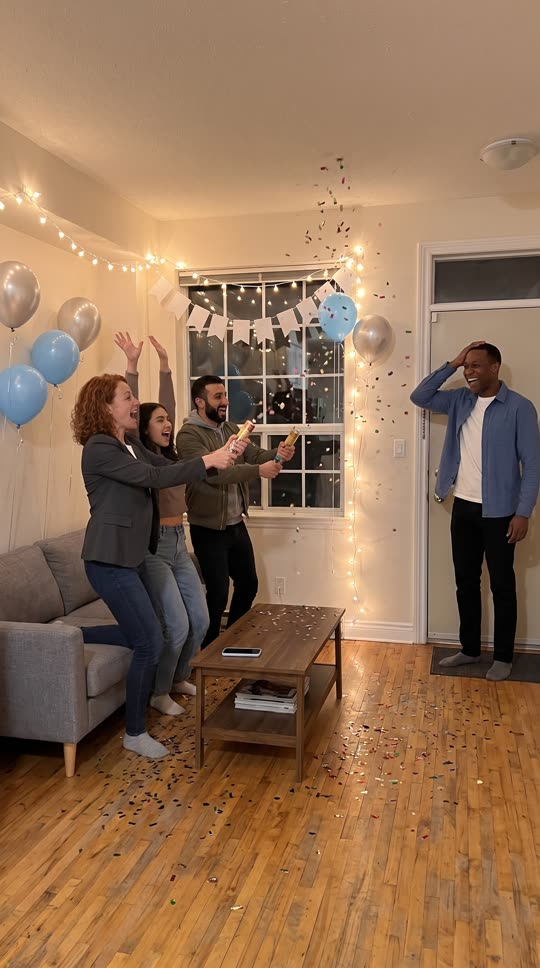

Cast and world
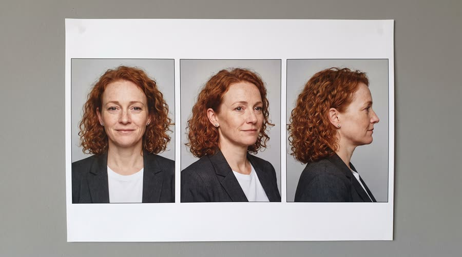
Voice: bright, quick, a little breathless, American
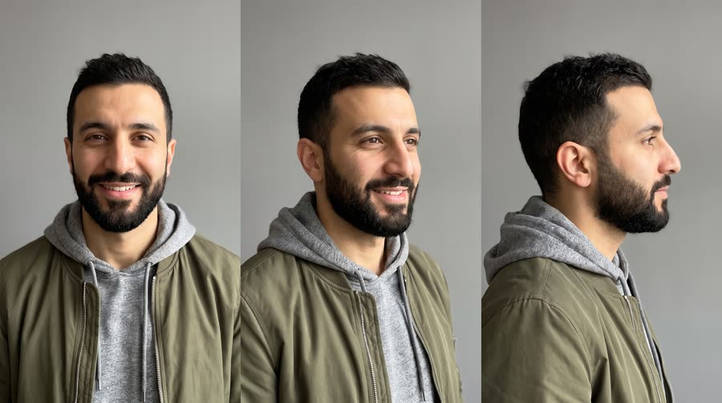
Voice: fast, warm, mock-panicked, American
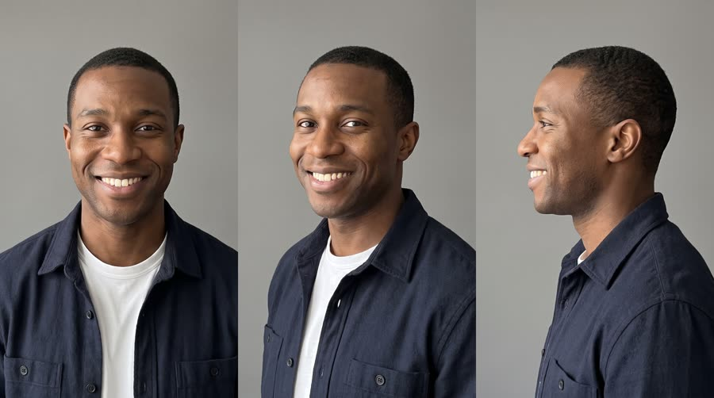
Voice: deep, delighted, laughing, Canadian
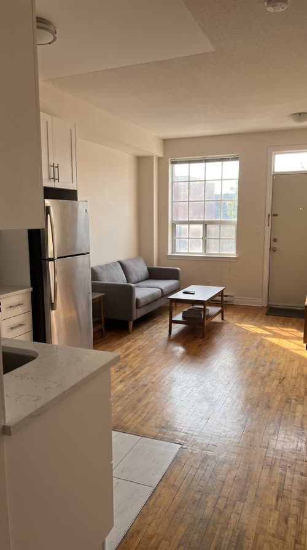
World. Leah's small apartment in Toronto on a Friday, 5pm to 7pm, and the group chat 'Jules turns 30' that is planning his surprise party there. One quick cutaway to Omar in his parked car. Palette. Built from the can: white and silver kitchen, sky-blue and silver balloons, outgoing chat bubbles in sky blue #6EC1E4; the payoff adds warm string-light amber.
Fictional brands. the chat app is generic and unnamed (no app name, no logo, a clean neutral UI built in code); Jules turns 30 (the group chat name, post only)
Beats
| Time | Beat | What happens |
|---|---|---|
| 0-2.2 | hook | A phone buzzing face-up on a counter; notification banners stack in: guests at 7, is Leah still on decor and cake, Jules left work early. |
| 2.2-9.4 | setup | Leah walks in from work and reads it; her reply: running on empty. Omar sends a voice note from his car. She types 'hold on' and opens the fridge. |
| 9.4-14.8 | product | The can from the fridge door, the crack, the sip, the line. Her reply lands: ok. i'm on it. |
| 14.8-20 | build | Montage with ticks firing into the chat: balloons done, cake done, lights done. Omar: who ARE you. |
| 20-24.5 | payoff | String lights, the door opens, everyone jumps out; Jules can't believe it. |
| 24.5-30 | cta | She sends one last photo to the thread: the can by the cake. Caption: wiiings without sugar. |
Screenplay
22 spoken words in 30 s. Each line keeps its intent (fixed in the template) and its wording (written for this product).
| Time | Speaker | Line | Intent (template) |
|---|---|---|---|
| 2.6-4.6 | Leah | Decor AND cake. Tonight. reading off the phone, deflating, half a laugh | Setup: the hero reads the ask out loud and feels the size of it. |
| 5.3-7.2 | Omar | Two hours, Leah. You good? voice note, fast, mock-panicked, phone held flat near his mouth | Raise the stakes with a countdown from someone counting on her. |
| 12.2-14.6 | Leah | Red Bull Sugarfree. Okay. Focus. to herself after the sip, rallying, a small grin · Say: RED BULL SHUG-er-free, three clear words | Product line: the hero names the product and the benefit she needs right now, allowed claim only. |
| 21.2-21.9 | Leah | Surprise! shouted together with Omar and a friend, jumping out | Payoff: the plan works. |
| 22.4-23.8 | Jules | You did all this? laughing, stunned, hand on his head | Payoff: the person it was for credits the hero. |
| 27.2-29.4 | Leah (off camera) | Wiiings without sugar. warm voiceover, smiling, party noise under it · Say: WINGS, stretch the vowel slightly | Tagline in the brand's own words. |
Generation plan
U1 · 0 to 9.4 s · 10 s generation
Shots S01, S02, S03, S04 · References: leah card, omar card, apartment plate, S01 keyframe as first frame
9:16 candid smartphone footage, natural handheld phone-camera look, realistic late afternoon light. Every phone screen is dark and blank with no interface, icons or text. Shot 1 (0 to 2.2 s): locked overhead close-up of a plain black phone lying face-up on a white stone counter, buzzing three times, the dark screen glowing faintly. Shot 2 (2.2 to 5 s): @Image1 (Leah, copper-red curls, charcoal blazer, tote bag on her shoulder) in the kitchen of @Image3 picks up the phone, screen tilted away, reads it and deflates: "Decor AND cake. Tonight." Shot 3 (5 to 7.4 s): @Image2 (Omar, beard, olive bomber) in the driver's seat of a parked car records a voice note, phone held flat below his mouth: "Two hours, Leah. You good?" Shot 4 (7.4 to 10 s): Leah thumbs a quick reply, then pulls the silver fridge door open, cool light on her face. Native sound: phone buzz, tote bag, car interior hush, fridge seal. No music. No text on screen.
U2 · 9.4 to 14.8 s · 6 s generation · exact-risk (short, cheap to re-roll)
Shots S05, S06 · References: product can official, leah card, S05 keyframe as first frame
9:16 candid smartphone footage. Shot 1 (0 to 2.2 s): locked macro insert inside a fridge door, a woman's hand takes the exact can from @Image1 off the door shelf, label to camera, upright and undistorted, cold condensation. Shot 2 (2.2 to 6 s): medium close-up of @Image2 (Leah) at the kitchen counter, sleeves pushed up, she cracks the can, takes one sip, lowers it to chest height with the label readable, and says to herself with a rallying grin: "Red Bull Sugarfree (said RED BULL SHUG-er-free, three clear words). Okay. Focus." Keep the can's shape, colours, wordmark and bulls exactly as @Image1. Native sound: fridge hum, the can crack, her voice. No music.
U3 · 14.8 to 24.5 s · 10 s generation
Shots S07, S08, S09 · References: leah card, omar card, jules card, apartment plate, S07 keyframe as first frame
9:16 candid smartphone footage, early evening turning to night. Shot 1 (0 to 2.6 s): @Image1 (Leah) on a step stool in the living room of @Image4 tapes up a plain white paper garland with no writing, plain sky-blue and silver balloons beside her. Shot 2 (2.6 to 5.2 s): high three-quarter close-up of her hands smoothing white frosting on a round cake and scattering sky-blue sprinkles, no writing on the cake, warm string lights click on behind. Shot 3 (5.2 to 10 s): wide in the dark decorated living room, the front door on the right opens and @Image3 (Jules, navy overshirt) steps in; Leah, @Image2 (Omar) and a young woman friend jump up from behind the sofa shouting "Surprise!" with party poppers; Jules laughs, hand on his head: "You did all this?" Nobody holds a drink. Upright, level horizon. Native sound: tape, spatula, lights clicking, door, shout, laughter, poppers. No music. No text.
U4 · 24.5 to 30 s · 6 s generation · exact-risk (short, cheap to re-roll)
Shots S10 · References: product can official, S10 keyframe as first frame
9:16 candid phone-photo look, held almost still with a tiny handheld drift: the exact can from @Image1 standing upright on a white stone kitchen counter beside a white frosted cake with sky-blue sprinkles and no writing, silver confetti, label to camera, condensation, warm string-light bokeh and blurred party guests moving behind. The can does not move or change. Keep the upper third soft and empty. Native sound: party chatter and laughter in the next room, a phone shutter click. No music, no text.
Sound, music, voice, captions
| 0 to 9.4 s | the thread | Sparse, curious plucked synth and finger snaps, 112 bpm in F major, leaves space for buzzes and pops, a small tension riser under the fridge door. |
| 9.4 to 20 s | on it | Drops in fully on the can crack: bouncy upbeat indie-pop with claps and a bass line, each montage tick lands on a beat. |
| 20 to 30 s | surprise and send | Cuts to silence for one beat as the door opens, explodes on Surprise with a big chorus lift, then settles warm under the photo message and tagline. |
Added sound
- 0.3 s: notification buzz and soft ding per banner (0.3, 0.9, 1.5 s) (the hook is the notification stack; each banner must land)
- 5.1 s: voice-note start blip (tells the viewer Omar's line is a voice note in the thread)
- 11.8 s: can crack and fizz (the product moment must register; only added if the native crack is weak)
- 14.4 s: sent swoosh (her reply is the turn of the story)
- 25.2 s: phone shutter click then sent swoosh (the CTA photo being sent to the thread)
- Leah: native in U1, then her U1 vocal stem as voice reference for U2, U3 and the tagline
- Omar: native in U1 (voice note, light phone-mic EQ in post); shout in U3 uses his U1 stem
- Jules: native in U3
font: Inter SemiBold, size: 4.4% of frame height, color: #FFFFFF, active word: #FFFFFF full opacity, other words 70%, shadow: soft 0 2px 6px rgba(0,0,0,.55), box: False, position: centre, 30% down the frame when the chat panel sits in the lower half; 72% down when the chat is at the top; never overlapping bubbles, max words on screen: 4, chat ui: bubbles Inter Medium 3.6% of frame height, 22px radius, max width 72% of frame, sender name 2.4% grey above incoming bubbles, outgoing #6EC1E4 with white text, incoming #E9E9EB with #111 text, group header with a blank circular avatar and the chat name, read receipt 'Seen' in 2.2% grey, voice notes: spoken voice notes show as a waveform bubble with a play head that moves while the line plays, plus the normal spoken caption
Post text- 0.3 to 2.2 s: Notification banners over the phone in S01, dropping from the top and stacking: 0.3 s 'Omar: guests at 7. he suspects NOTHING', 0.9 s 'Omar: leah you still on decor + cake??', 1.5 s 'Maya: jules left work EARLY 👀' / each banner shows a blank circular avatar and the chat name 'Jules turns 30 🤫' (frosted translucent white banners, 20px radius, Inter SemiBold sender and Inter Regular message, drop in over 6 frames with a slight overshoot, pinned to the phone screen with a 2D track)
- 2.2 to 5.0 s: Chat panel in the lower 45% of frame, header 'Jules turns 30 🤫'. The three messages as incoming grey bubbles; typing dots from Leah at 3.6 s; 4.4 s Leah (outgoing, sky blue): 'just got home. running on empty' / (full-width chat card over the live action with an 85% white background, bubbles per caption_look.chat_ui, panel scrolls up 1 bubble at a time)
- 5.0 to 7.4 s: Omar voice-note bubble (incoming): waveform with play head, duration '0:02' / (grey incoming bubble with a small blank avatar, play head moves with his spoken line; spoken caption shown separately at 30% down the frame)
- 7.8 to 9.4 s: Leah (outgoing): 'hold on' / (single sky-blue bubble sliding in bottom right over the fridge shot)
- 14.2 to 14.8 s: Leah (outgoing): 'ok. i'm on it' / 'Seen by 4' receipt under it at 14.6 s (sky-blue bubble pops in with a 4 frame scale bounce, sent swoosh)
- 14.8 to 20.0 s: Montage bubbles in a compact panel at the top 30% of frame: 15.2 s Omar 'status??', 16.2 s Leah 'balloons ✅', 17.8 s Leah 'cake ✅', 18.9 s Leah 'lights ✅', 19.5 s Omar 'who ARE you' / (each bubble on screen at least 0.8 s before the next; only the first and last bubble get a pop sound)
- 20.0 to 20.8 s: Notification banner: 'Maya: HE'S HERE' / (single banner drops over the dark room as the door opens, then clears)
- 24.8 to 30 s: The S10 frame shrinks into a rounded photo bubble sent by Leah in the chat; 26.0 s Leah bubble 'wiiings without sugar '; 26.8 s Omar 'LEGEND'; 27.4 s endcard 'Red Bull Sugarfree' with 'Wiiings without sugar' beneath, over the full-frame can / Wiiings without sugar (photo bubble scales from full frame to a 70% width bubble in 10 frames then back to full frame at 27.4 s for the endcard; endcard Inter Tight Bold white centred in the empty upper third)
Adaptation contract
How this same concept takes any physical product.
| Product type | Where it sits in the story | Scale |
|---|---|---|
| ingested | she grabs the drink from the fridge, cracks it, and replies 'on it' | hand |
| applied | she applies the product at the bathroom mirror (face mist, balm, hair product) and replies 'on it' | hand |
| worn | she swaps her work shoes for the product (sneakers, socks, comfy layer) and replies 'on it' | body |
| handheld | she grabs the gadget (earbuds, speaker, glue gun, balloon pump) and replies 'on it' | hand |
| carried | she unzips the bag that has everything in it and replies 'on it' | hand to lap |
| home | the home product does the heavy lifting (the lights, the speaker, the sofa that seats everyone) | room |
| consumable | she opens the pack that makes the job fast (frosting, decor kit, snacks) and replies 'on it' | hand |
Style bible
Look. Two layers. Layer 1, the chat: a clean generic messaging UI built in code, full-width over the live action or pinned to the phone screen, incoming bubbles light grey on the left with the sender's name above, outgoing bubbles in the product's accent colour on the right, typing dots before every incoming bubble, notification banners that drop from the top and stack. Layer 2, live action: natural handheld phone-camera realism, people glancing down at phones, reacting, doing. Phones in the live action have dark blank screens or a soft glow with no UI, screens kept flat and unoccluded with visible corners so the UI can be tracked in. The final product shot is also the photo that gets sent into the chat.
Camera. Handheld but steady, 26 to 35mm phone-camera feel at eye level for people; over-the-shoulder and top-down on phones so the screen is a clean trackable rectangle; locked macro for the product; the chat UI itself never moves except to scroll up as bubbles arrive.
Light and texture. Real, slightly imperfect everyday light: late afternoon window light in a kitchen, overhead store light, then warm party practicals (string lights) for the payoff. Phone screens add a soft cool glow on faces. Native smartphone footage: mild sharpening, a touch of noise in the shadows, no film grain, no cinematic letterbox. The UI layer is perfectly crisp in contrast.
Pacing. Hook in under 2 seconds with a buzzing phone and a notification stack that states the stakes. Reading time rule: each bubble stays fully on screen at least 0.6 s plus 0.25 s per word, and never more than 3 new bubbles per 2 seconds; typing dots run 0.5 to 0.9 s before incoming bubbles. Cut to live action every 2 to 3 seconds so the chat breathes. The product moment is a live-action insert held at least 1.5 s, followed by the hero's sent reply. Montage of done-ticks in the build, a spoken payoff, then the photo message as the CTA.
Sound. Native room sound and short spoken lines from the generations. Added UI sounds are the backbone: a soft pop per incoming bubble, a lighter swoosh per sent bubble, a buzz for notifications, all kept quiet under a light upbeat score that ducks for speech. Only the most important UI moments get a sound (never a pop on every bubble in the montage, just the first and last).
Known failures.
- the model draws fake UI, emoji or gibberish text on phone screens: always say the phone screen is dark and blank with no interface, icons or text, and keep the screen tilted slightly away
- fingers cover the screen and break the screen track: say the thumb rests at the bottom edge and the screen's four corners are visible
- phones come out with a real manufacturer logo or camera bump branding: say a plain black phone with no logo, back not visible
- notification text drawn by the model: the lock screen is blank, notifications are post only
- party props grow printed words (banners, balloons, cake writing): say plain balloons, a blank paper garland, a cake with no writing
- too many bubbles at once are unreadable at phone speed: max 6 words per bubble, max 3 new bubbles per 2 seconds
- the product disappears or becomes a generic can in the fridge: keep a locked insert and pass the product reference
- a surprise-party crowd holding drinks invites extra cans: only the hero holds the product, everyone else holds nothing or party poppers
- the product reference sheet can be pasted in as an inset panel in the corner of an insert: say one single continuous photograph, no inset images, no picture-in-picture
- packaged props like balloon bags get printed brand words ('Balloons'): say plain clear bag with no printing and no label
- 'phone photo of' puts a phone in the photo: say 'as if taken on a phone' and no phone or hands in frame
- car interiors bring sun-visor warning stickers with garbled text: say the visor is folded flat with no stickers or labels
- garlands and foil balloons in the background pick up garbled letters: keep them out of product shots or say plain with no print
Claims and cost
Claims used (all from the product page): Caffeine helps to improve concentration and increase alertness; Same benefits of the original Energy Drink, without sugar (tagline form)
Video estimate: 32 s of generation at $0.27/s = $8.64 first pass, $20 to 30 with retakes, plus about $1.5 music.